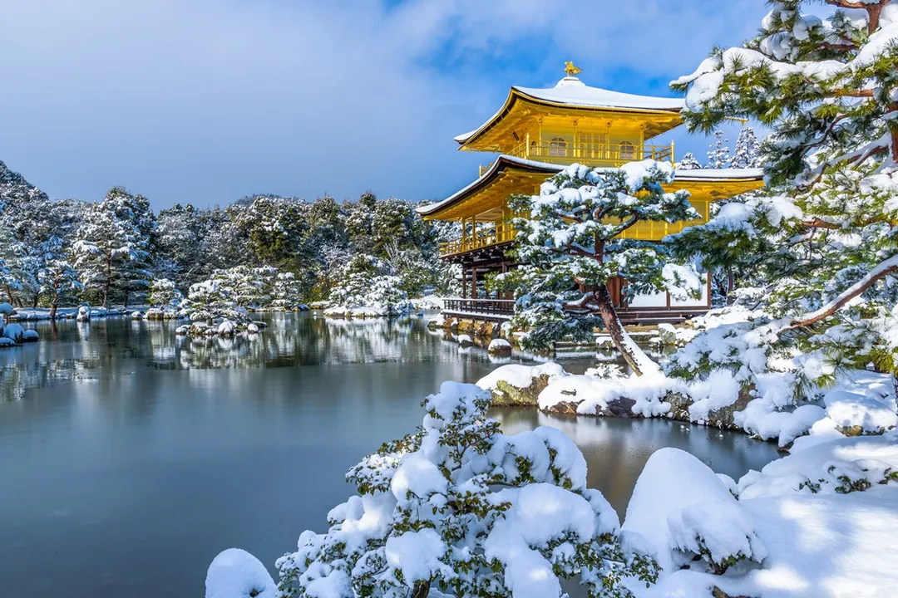

1. Hakuba, Nagano
Khu nghỉ dưỡng trượt tuyết của Hakuba, Nagano là một trong những điểm du lịch mùa đông tại Nhật Bản nhận được nhiều sự yêu thích của du khách. Nơi đây có những con dốc với độ cong tuyệt đẹp, ván trượt, giày trượt và phòng tắm tiện nghi, là những yếu tố tuyệt vời gợi lên sự hứng khởi cho du khách.
Khu nghỉ dưỡng trượt tuyết của Hakuba, Nagano là một trong những điểm du lịch mùa đông tại Nhật Bản nhận được nhiều sự yêu thích của du khách. Nơi đây có những con dốc với độ cong tuyệt đẹp, ván trượt, giày trượt và phòng tắm tiện nghi, là những yếu tố tuyệt vời gợi lên sự hứng khởi cho du khách.
Nếu bạn có con nhỏ, đừng ngần ngại khi giao phó “báu vật” của mình cho những người hướng dẫn. Cứ nhìn những đứa trẻ vui đùa khắp cả 7 khu trượt tuyết ở đây thì bạn sẽ rõ, một vài đứa có lẽ chỉ khoảng 5 tuổi thôi. Những hướng dẫn viên tận tình sẽ giúp bạn để mắt tới những đứa trẻ. Có thể nói, mùa đông ở Nhật Bản là thời gian nghỉ dưỡng tuyệt vời nhất cho các gia đình có trẻ nhỏ.
Hakuba cũng sở hữu các khu nghỉ dưỡng, đồ ăn và các hoạt động phù hợp với rất nhiều phong cách, từ phong cách truyền thống Nhật Bản cho đến phong cách Tây Âu. Các cung đường trượt tuyết ở đây cũng rất đa dạng, từ các cung đường dài xuyên rừng cho đến những cung đường trượt với độ dốc cao dành cho những người ưa cảm giác mạnh. Tất cả đều sẵn sàng cho bạn lựa chọn. Bạn cũng đừng quên ghé qua Jigokudani, ngay cạnh Hakuba để thăm những chú khỉ tuyết – một loài động vật quý hiếm trên thế giới.
Website: #
2. Shirakawago, Gifu
Bản sắc văn hoá độc đáo của Nhật Bản có thể khiến bất cứ du khách nào cũng cảm thấy hài lòng khi ghé thăm. Bạn cũng có thể kết hợp một kỳ nghỉ trượt tuyết với chuyến du lịch khám phá “xứ sở mặt trời mọc” tuyệt vời.
Với vẻ đẹp mang đậm nét cổ kính và yên bình, Shirakawago là một trong những địa danh có thể cuốn hút tâm trí bạn ngay từ những giây phút đầu tiên. Ngăn cách với thế giới bên ngoài bởi những ngọn núi cao, ngôi làng nhỏ này mới chỉ được “phát hiện” chừng 10 năm đổ lại đây. Ấn tượng mà Shirakawago mang lại cho du khách là một ngôi làng nhỏ xinh đẹp với những túp lều tranh, chiếc bánh gừng và nền văn hoá độc đáo.
Được giới thiệu bởi trang web về di sản thế giới, Shirakawago đón chào lượng du khách ngày một tăng. Vẻ đẹp xanh tươi đầy sức sống trong mùa hè hay trắng muốt tinh khôi màu tuyết vào mùa đông của Shirakawago luôn khiến cho du khách không nỡ rời khỏi nơi đây. Trong làng luôn có sẵn các Minshuku (nhà khách) để khách trọ lại. Đây cũng được coi là thiên đường đối với những tín đồ đam mê chụp ảnh.
Website: #
3. Hida, Takayama
Takayama còn được biết đến như một “Kyoto thu nhỏ” cũng bởi những thành trì, kiến trúc cổ kính từ thời Edo vẫn còn được giữ lại. Sức quyến rũ của Takayama còn đến từ nền ẩm thực vô cùng đặc biệt, từ đặc sản địa phương như: Sansai (rau núi), Wasakana (cá sông), thịt bò Hida (đối thủ cạnh tranh của thịt bò Wagyu), mỳ Soba truyền thống theo hương vị Takayama tới một loạt nhà máy bia ngon nhất nước Nhật. Đặc biệt, bạn không nên bỏ qua món Hōba miso – món nướng của địa phương, được làm chủ yếu từ thịt bò hoặc cá nướng trên lá Hōba (một loài cây họ gần với cây Mộc Lan) hoặc lá sồi.
Takayama có những trận tuyết rơi cao nhất ở Nhật Bản – đảm bảo thoả mãn bất cứ nhiếp ảnh gia chuyên nghiệp nào. Hình ảnh cây cầu sơn đỏ với những người phụ nữ mong manh trong chiếc kimono truyền thống, xung quanh là những rặng thông đỏ đủ để làm bất cứ du khách nào cũng phải hài lòng.
Có thể nói Takayama còn là địa phương thân thiện với môi trường. Khu phố cổ đan xen rải rác một vài toà nhà Kura tuyệt đẹp được xây bằng bùn và gạch – những vật liệu chịu lửa tuyệt vời, giữa hàng loạt những ngôi nhà cổ bằng gỗ và giấy xung quanh. Những ngôi nhà Kura là nơi mà cộng đồng gửi gắm những vật dụng quý giá của họ để đề phòng những trận hoả hoạn. Ngày nay, nhà Kura còn được chuyển đổi thành các cửa hàng, quán cà phê thời thượng và cũng là nơi để du khách nếm thử món rượu Sake địa phương tuyệt vời.
Mỗi mùa ở Takayama lại có những nét quyến rũ riêng. Mùa thu và mùa xuân ở Takayama là mùa lễ hội với hai lễ hội nổi tiếng lần lượt diễn ra. Những chiếc xe hoa tuyệt đẹp đã sử dụng trong dịp lễ hội sẽ được người ta trưng bày suốt cả năm ở bảo tàng. Nếu bạn định đến Nhật Bản vào mùa đông, đừng quên thêm Takayama vào danh sách những nơi cần đến thăm.
Website: #
4. Gero, Gifu
Suối nước nóng Gero ở Yunoshima, thành phố Gero, tỉnh Gifu, là một trong ba suối nước nóng nổi tiếng nhất tại Nhật Bản. Đây là địa điểm tuyệt vời để tận hưởng chuyến du lịch trong ngày và cả nghỉ ngơi qua đêm. Trên thực tế, Gero có vai trò như một “nơi cung cấp nước” vì nó thuộc hệ thống dòng nước ngầm phong phú của vùng biển nhiệt. Hãy dũng cảm, cởi quần áo và trượt trong các hồ nước nóng, nhưng có một vài bước để làm theo trước khi làm như vậy.
Bên trong các Suimeikan Ryokan (nhà trọ truyền thống) có 3 onsen (suối nước nóng) sang trọng, với không gian rộng mở mang lại cảm giác thư thái, yên bình cho du khách.
Ngoài ra, bạn có thể trải nghiệm một điều “điên rồ” thú vị mà không thể làm ở bất kỳ nơi nào khác, là khoả thân trên tuyết và tới các hồ bơi. Hơn nữa, không gian xung quanh được bài trí theo phong cách sân vườn đậm “chất” Nhật Bản với một vài hòn đá, cây xanh có thể mang lại cảm giác thư giãn tuyệt vời cho các du khách.
Cho dù không gian mở của Onsen có hướng bạn ra cảnh tuyết rơi, hay phong cảnh núi rừng bao bọc, hoặc một dòng sông chảy bên dưới, thì trải nghiệm này cũng thực sự rất “Nhật Bản”.
Website: #
5. Đền Kinkaku-ji

Ngôi đền Vàng nằm ở cố đô Kyoto cũng là điểm đến đẹp nhất ở cố đô. Mùa đông Nhật Bản đến, cũng là lúc Kinkaku-ji được phủ giữa bốn bề bởi tuyết trắng, du khách sẽ không khỏi ngạc nhiên khi chứng kiến khung cảnh này như một lâu đài băng nằm giữa hồ với cơn mưa trắng xóa sẽ làm bạn không thể quên được.
Nếu có dịp du lịch Nhật Bản vào mùa đông thì đừng bỏ qua những địa điểm sau đây vào hành trình của bạn, chắc chắn bạn sẽ không cảm thấy hối tiếc chút nào đâu.
Website: #
6. Rokkosan Snow Park
Khu trượt tuyết nổi tiếng gần Osaka nhất là Công viên tuyết núi Rokko. Dù là khu trượt tuyết nhân tạo nhưng đôi lúc cũngcó tuyết tự nhiên ở đây vào mùa đông. Nơi này được phân thành hai khu riêng biệt có dốc và không dốc nên trẻ em có thể yên tâm vui chơi. Thứ bảy, chủ nhật sẽ bị giới hạn số người vào chơi nên hãy cố gắng đi sớm nhé!
Website: https://www.rokkosan.com/access/
7. Công viên hoa Nabana no sato (Mie)
Nabana no sato là một công viên hoa nằm ở thành phố Kuwana, tỉnh Mie. Nơi đây tự hào có nhiều loại hoa và thực vật theo mùa, thu hút lượng khách du lịch đông đảo trong và ngoài nước. Bạn có thể cảm thấy một chút lạ lẫm vì mùa đông thường không thích hợp để thưởng thức hoa nở, nhưng ở đây thì khác. Vì họ có một nhà kính lớn, tạo môi trường thích hợp cho hoa phát triển quanh năm, bảo vệ chúng khỏi thời tiết lạnh giá vào mùa đông.
Trên thực tế, mùa đông là mùa được nhiều du khách ghé thăm nhất vì có một lễ hội chiếu sáng nổi tiếng được tổ chức hàng đêm trong suốt mùa đông. Toàn bộ khu vườn được thắp sáng rực rỡ với những ánh sáng lấp lánh với một chủ đề khác nhau hàng năm. Một đường hầm ánh sáng kéo dài khoảng 200 mét và một biển đèn bao quanh cây ô liu hơn 1.000 năm tuổi, tất cả tạo nên một màn trình diễn ánh sáng ngoạn mục, nơi bạn có thể đi qua và chụp những bức ảnh tuyệt đẹp.
Website: #
8. Đại lộ Metasequoia (Shiga)
Một trong những cung đường lãng mạn nhất tại Phù Tang chính là đại lộ lá vàng Metasequoia tại tỉnh Shiga. Nơi đây nổi tiếng vào mùa thu khi được nhuộm một màu vàng rực bởi những hàng cây bên đường, khoảng 500 cây được trồng dọc hai bên đường tỉnh lộ 287.
Tuy nhiên, con đường yên bình dài 2,4 km không bao giờ ngừng mê hoặc du khách, nhất là những cặp đôi thích sự lãng mạn khi thời tiết trở lạnh. Nơi đây được nhiều người biết đến như một danh lam thắng cảnh với những hàng cây đẹp sừng sững vươn thẳng lên trời một cách lặng lẽ, nhưng mạnh mẽ. Khi bạn lái xe qua con đường, những hàng cây metasequoia cao ngất ngây mê hoặc bạn với khung cảnh khác nhau theo từng mùa . Thế giới màu trắng tuyệt đẹp do tuyết tạo ra khiến nơi đây trở thành điểm đến tuyệt vời nhất cho chuyến du lịch mùa đông của bạn, cho ra những tấm hình lung linh.
Website: #
9. Khu vườn Kenrokuen (Ishikawa)
Kenrokuen là một khu vườn rộng lớn với 11,4 ha đất nằm ở trung tâm thành phố Kanazawa, tỉnh Ishikawa. Được coi là một trong ba khu vườn lớn ở Nhật Bản, nơi đây thu hút một lượng du khách đến tham quan quanh năm cùng với lâu đài Kanazawa gần đó. Công trình ban đầu được tạo ra bởi gia tộc Kaga, cai quản khu vực trong thời kỳ Edo.
Du khách bị mê hoặc bởi khu vườn kiểng với một số công trình kiến trúc mang tính biểu tượng như quán trà truyền thống của Nhật Bản, những chiếc đèn lồng bằng đá rực rỡ, những chiếc ao trong vắt và ngọn núi nhân tạo. Mọi thứ được thiết kế để hoàn toàn phù hợp với cảnh quan tuyệt đẹp và thiên nhiên xung quanh. Đặc biệt, những cây thông trong vườn được bao phủ bởi một số dây thừng kéo dài từ trên xuống. Đây được gọi là Yukitsuri, là một cách truyền thống để bảo vệ cành cây khỏi tuyết rơi dày đặc, mang lại vẻ đẹp thơ mộng cho mùa đông vùng Hokuriku.
Website: #